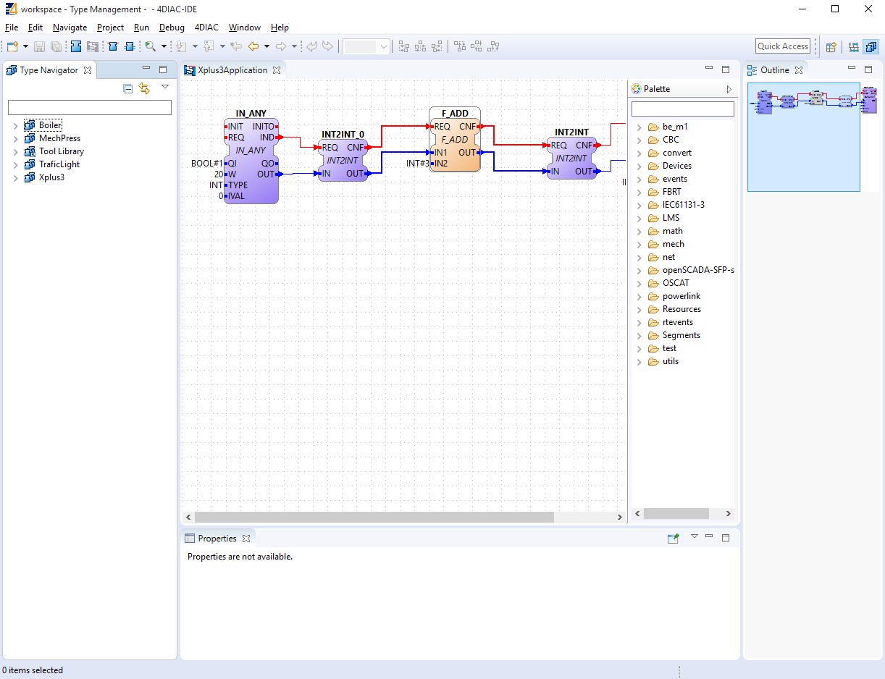

Step 0 - 4DIAC Overview
This page is part of a guide that gives a walkthrough over the major 4DIAC features.
- Overview (YOU ARE HERE!)
- Use 4DIAC locally
- Create a distributed application
- Deploy remotely
- Create your own Function Blocks
- Other basic features
- Advanced Features [optional]
In this Step 0, it's presented an overview about Elements, Perspectives and Properties of 4DIAC that you need to know for a smoother use of it.
4DIAC Elements
Since 4DIAC is compliant to the IEC 61499 standard, 4DIAC-IDE provides the standard's elements for work (you can check here to rememeber the elements):
 System: contains the System Configuration and its corresponding Applications
System: contains the System Configuration and its corresponding Applications Application: contains the desired application in terms of a FB network
Application: contains the desired application in terms of a FB network Device: It represents a hardware device like a programmable logic controller (PLC) or micro controller.
Device: It represents a hardware device like a programmable logic controller (PLC) or micro controller. Resource: It is responsible for the execution of the control logic within its own execution context.
Resource: It is responsible for the execution of the control logic within its own execution context.- Function blocks (FB):
 Basic FB (BFB): It uses an execution control chart (ECC) to control event execution. Algorithms are associated with the different states inside an ECC.
Basic FB (BFB): It uses an execution control chart (ECC) to control event execution. Algorithms are associated with the different states inside an ECC. Composite FB (CFB): It contains a FB network of existing FBs. Its FB interface passes events and data on to the contained FBs that make up the CFB, which in turn pass events and data among themselves and out to the CFB's normal output interface.
Composite FB (CFB): It contains a FB network of existing FBs. Its FB interface passes events and data on to the contained FBs that make up the CFB, which in turn pass events and data among themselves and out to the CFB's normal output interface. Service interface FB (SIFB): It is usually used for something that cannot be done through the IEC 61499 standard like communication with devices or networks segments. It helps to first understand basic and composite FBs. SIFBs are then used to realize only what cannot be done with a BFB/CFB.
Service interface FB (SIFB): It is usually used for something that cannot be done through the IEC 61499 standard like communication with devices or networks segments. It helps to first understand basic and composite FBs. SIFBs are then used to realize only what cannot be done with a BFB/CFB.
 Adapter: combines a set of input/output events and data to one connection, at the one hand it simplifies the IEC 61499 Application and on the other hand it better decouples Application parts providing an interface concept allowing to adopt the polymorphic concept of object oriented programming
Adapter: combines a set of input/output events and data to one connection, at the one hand it simplifies the IEC 61499 Application and on the other hand it better decouples Application parts providing an interface concept allowing to adopt the polymorphic concept of object oriented programming
4DIAC Perspectives
The 4DIAC-IDE provides four perspectives, which can be added by the  button in the upper right corner:
button in the upper right corner:
- System perspective is used to configure everything regarding your system. It includes:
- System Manager which allows to create and edit your System and Applications.
- System Configuration, which allows to manage Devices, Resources and Segments according to IEC 61499. The Resources are used for Application mapping and insertion of communication function blocks to other Devices and Resources.
- Applications according to the IEC 61499 Application Model and found under 4DIAC-IDE System Model
- Type Management perspective, which allows to manage the available function block types
- Deployment perspective where the Applications are launched and tested
- 4diac Debug perspective where Applications can be monitored
System Perspective
In the right upper corner the perspective can be changed. The System perspective is reached by the button. The System perspective is divided into the following five areas.
- System Management area, which is used for the management of IEC 61499 compliant applications and to configure Devices and Resources. In a tab next to it, there's the Type Navigator, which lists the available function block library for every System as well as the default library.
- Editor area, which contains the Application editor for modeling of control applications, the System editor for modeling the System configuration, and the Device and Resource editor for modeling the Resource configuration
- Property view, which allows the parameterization of function block instances, Devices, and Resources
- Outline of Applications, System configurations, Devices, and Resources
- Palette: shows the elements that you can add to the editor.

Type Management Perspective
In the right upper corner the perspective can be changed. The Type Management perspective is reached by the  button. The Type Management perspective is divided into the following three areas.
button. The Type Management perspective is divided into the following three areas.
- Type Navigator for the management of different type libraries, tool and project specific ones as well as the management of IEC 61499 element types
- Type Editor for the modification of IEC 61499 element types, like Basic, Composite, and
Service Interface Function Block Types
- Outline of FB types

Deployment Perspective
In the right upper corner the perspective can be changed. The Deployment perspective is reached by the  button. The Deployment Management perspective is divided into the following four areas.
button. The Deployment Management perspective is divided into the following four areas.
- Download Selection for the selection of a System, Devices or Resources which have to be deployed to controller runtimes
- Visualization of download messages
- Runtime Launcher and Download Button which start the deployment process and launch IEC 61499 compliant runtimes
- Console output in case the runtime is running locally

Debug Perspective
In the right upper corner the perspective can be changed. The Debug perspective is reached by the  button. The Debug perspective is divided into the following five areas.
button. The Debug perspective is divided into the following five areas.
- System selection where Systems can be marked for monitoring with right click and choosing
- Outline
- Breakpoints view which lists the defined breakpoints and allows their activation and deactivation, this feature is currently not supported
- Watches view which allow to watch the actual values of the variables you marked for watching
- Application editor which shows your Application and highlights the variables marked for watching

4diac-IDE Properties
Preferences
Before starting with the engineering process of IEC 61499 Applications, you should set the preferences for the 4DIAC-IDE under . There are different preference pages where various parameter settings for the 4DIAC-IDE can be made, like different colors, connection routers or the location of the FORTE executable. Please set the location within and if you want to start FBDK or FORTE within the Deployment perspective of 4DIAC-IDE. For FBRT specify the path/fbrt.jar and for FORTE path/forte.exe.

Selecting an element (e.g. Systems, Devices, Resources, Applications, Function Blocks, ...) and pressing the right mouse button opens the context menu with several menus to manipulate the specific element. The following general toolbar items are provided:
 and
and  allow to either hide the event or the data connections in the Application Editor Editor
allow to either hide the event or the data connections in the Application Editor Editor allows to start Systems for monitoring. This can also be achieved by right clicking on the System and choosing .
allows to start Systems for monitoring. This can also be achieved by right clicking on the System and choosing . allows to print the Applications and the Automation Hardware
allows to print the Applications and the Automation Hardware allows to save changes from the toolbar or the file (Save or Save All is used) but also by the key Ctrl + s
allows to save changes from the toolbar or the file (Save or Save All is used) but also by the key Ctrl + s provides undo and/or redo of last changes
provides undo and/or redo of last changes provides zoom functionality in the toolbar or the menu entries in the context menu of an editor but also by pressing Ctrl and scrolling the mouse wheel
provides zoom functionality in the toolbar or the menu entries in the context menu of an editor but also by pressing Ctrl and scrolling the mouse wheel- Function Block instances and Devices respectively can be deleted using the Del key or the context menu entry Delete.
- Instance names of Function Blocks, Resources or Devices can be changed by double click that enables the instance name field to be editable. It is also possible to change the instance name in the Properties View at the bottom of the window.

Where to go from here?
Now that you had an overlook about the major things about 4DIAC, you can start using it:
Step 1 - Use 4DIAC-IDE locally
If you want to go back to the Start Here page, we leave you here a fast access
Start Here page
Go to top